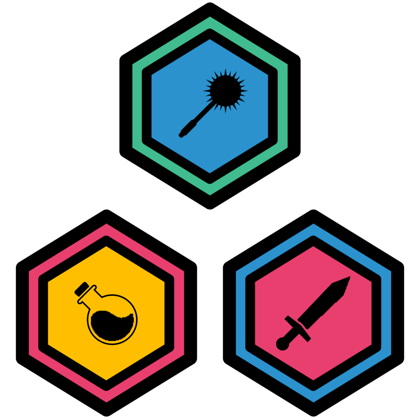

Welcome to the kata collection for Survival Games. This is for students and coaches participating in their local scholastic game jams for Winter/Spring 2019.

1 Intro Katas
1.1 Core Values Kata (difficulty = 1)
1.2 Game Jam Kata (difficulty = 1)
1.3 Hello World Kata (difficulty = 1)
2 Avatar Katas
2.1 Avatar Kata (difficulty = 1)
2.2 Avatar Kata (difficulty = 1)
2.3 Avatar Kata (difficulty = 1)
2.4 Avatar Kata (difficulty = 1)
3 Food Katas
3.1 Food Kata (difficulty = 1)
3.2 Food Kata (difficulty = 2)
3.3 Food Kata (difficulty = 2)
3.4 Food Kata (difficulty = 3)
4 Enemy Katas
4.1 Enemy Kata (difficulty = 1)
4.2 Enemy Kata (difficulty = 2)
4.3 Enemy Kata (difficulty = 1)
4.4 Enemy Kata (difficulty = 2)
4.5 Enemy Kata (difficulty = 3)
5 Crafter Katas
5.1 Crafter Kata (difficulty = 1)
5.2 Crafter Kata (difficulty = 2)
5.3 Crafter Kata (difficulty = 4)
5.4 Crafter Kata (difficulty = 6)
6 Extra Katas
6.1 Coin Katas
6.2 Coin Kata (difficulty = 1)
6.3 Coin Kata (difficulty = 2)
6.4 Coin Kata (difficulty = 2)
6.5 Coin Kata (difficulty = 3)
6.6 Sky Katas
6.7 Sky Kata (difficulty = 1)
6.8 Sky Kata (difficulty = 1)
6.9 Sky Kata (difficulty = 1)
6.10 Sky Kata (difficulty = 1)
6.11 Starvation Rate Katas
6.12 Starvation Rate Kata (difficulty = 1)
6.13 BG Katas
6.14 Bg Kata (difficulty = 1)
6.15 Bg Kata (difficulty = 1)
6.16 Bg Kata (difficulty = 2)
6.17 NPC Katas
6.18 Npc Kata (difficulty = 1)
6.19 Npc Kata (difficulty = 2)
6.20 Npc Kata (difficulty = 2)
6.21 Npc Kata (difficulty = 2)
6.22 Npc Kata (difficulty = 4)
7 Practice Game Jam Katas
7.1 Ready to run a Jam? (Or pratice jam?)
7.1.1 Game Jam Kata (difficulty = 3)
7.1.2 Game Jam Kata (difficulty = 10)
8 Survival Game Assets
8.1 Avatars, Enemies and NPCs
8.2 Food, Coin, and Crafting Items
8.3 Backgrounds
8.4 Sprite Sheets